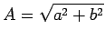

Inhalt Index DeskTop Bronstein

 Funktionen und ihre Darstellung Trigonometrische Funktionen (Winkelfunktionen) Beschreibung von Schwingungen
Funktionen und ihre Darstellung Trigonometrische Funktionen (Winkelfunktionen) Beschreibung von Schwingungen


In der Technik und der Physik kommen oft zeitabhängige Größen der Form
vor. Sie werden manchmal auch sinusoidale Größen genannt. Ihre zeitabhängige Änderung beschreibt eine harmonische Schwingung. Die graphische Darstellung dieser Gleichung liefert eine allgemeine Sinuskurve, wie sie die folgende Abbildung zeigt.

Die allgemeine Sinuskurve unterscheidet sich von der gewöhnlichen  :
:
Die Größe u(t) kann auch in der Form
dargestellt werden, mit  und  Die Größen a, b, A und
Die Größen a, b, A und  lassen sich in Übereinstimmung mit der folgenden Abbildung als Bestimmungsstücke eines rechtwinkligen Dreiecks darstellen.
lassen sich in Übereinstimmung mit der folgenden Abbildung als Bestimmungsstücke eines rechtwinkligen Dreiecks darstellen.